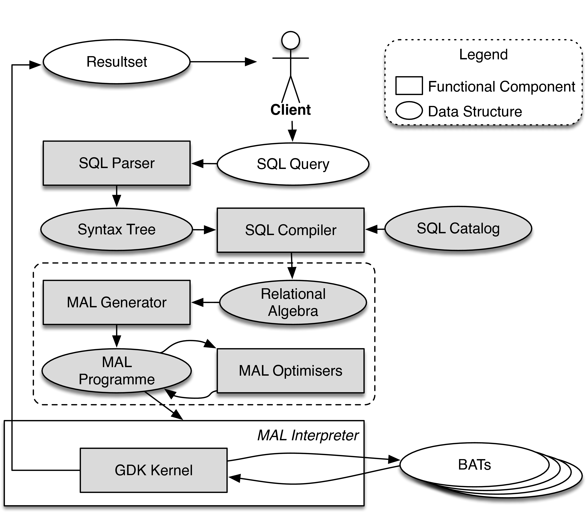

The following figure shows an overview of FaBIAM.  All components are integrated into the kernel of MonetDB. The solid arrows indicate the components that can already work together, while the dashed arrows indicating future integration. From bottom to top, they are divided into three layers:
In summary, the design of the FaBIAM architecture covers the whole stack of data loading, processing and analysis specially for fashion text and time series data. Further in this showcase, we detail one component in each layer in a separate section, i.e. JSON, continuous query processing and FLAIR integration.
Time series data are series of values obtained at successive times with regular or irregular intervals between them. Many fashion data, such as customer reviews, fashion blogs, social media messages and click streams, can be regarded as time series (mostly) with irregular time intervals. Taking customer reviews as an example, the raw data can be simply modelled as one long series of pairs (Of course, each pair needs to be annotated with meta information, such as the identify of the customer and the reviewed product.). By analysing this type of data, which we refer to as fashion time series, fashion retailers would be able to gain valuable insights of not only trends, moods and opinions of potential customers at a given moment in time, but also the changes in trends, moods and opinions of a period of time. Fashion time series is usually produced as streams of data. Hence, supporting fashion time series does not only require a system to be able to process streaming data but also persistent relational data, because information from customer reviews and fashion blogs typically need to be linked to the product catalogues and sales information which is generally stored in a relational database. Therefore, we have extended MonetDB with the notion of STREAM TABLE and a continuous query scheduler, so that we can also benefit from the 25+ years research and engineering work on optimising data processing in MonetDB for fashion time series streaming data processing.
The following figure shows the software implementation stack of a MonetDB database server. The boxes with gray background are components that have been modified or extended to support the storage and management of streaming data, and the processing of continuous queries. At the SQL level, all components, including the parser, syntax tree, compiler and catalog, have been extended to support the new language syntax for streaming tables and continuous queries. The MAL is a MonetDB internal language in which the physical query execution plans are expressed (as shown here). At the MAL level, all components have been extended to support the new language features, as well as a new MAL optimiser, called continuous query scheduler, who is in charge of the administration and invocation of continuous queries. Finally, at the database execution kernel level (i.e. the GDK kernel), the transaction manager has been modified to use a much lighter transaction scheme for streaming tables and continuous queries, because streaming tables only contain transient data to which the strict database ACID properties do not apply.
Data delivered or generated in streaming applications often require immediate processing. In most cases, the raw data need not end-up in the persistent store of a database. Instead, it is first refined and aggregated. Moreover, modern message brokers often manage the persistency of the raw data in a distributed and reliable fashion. In case of failures, they already provide methods to go back in time to start reprocessing. Redoing this work as part of a database transaction would be unnecessary and a potential performance drain. This leaves us with the notion of streaming tables which are common in most streaming databases. They are light versions of normal relational tables, often solely kept in memory and not subjected to the transaction management. They are the end-points to deliver the streaming events. The following SQL syntax specifies how a streaming table can be created in MonetDB:
CREATE STREAM TABLE tname (... columns ...)
[SET [WINDOW positive_number] [STRIDE positive_number]];
The column definitions follow the regular definition of persistent tables. Primary Keys and Foreign Key constraints are ignored as a reaction to their violation would be ill-defined in case of a streaming table. The WINDOW property determines when a continuous query that has been defined on this table should be triggered. When set, the WINDOW parameter denotes the minimal number of tuples in the streaming table to trigger a continuous query on it. If not provided (default), then any continuous query using this stream table will be triggered by an interval timer instead. The STRIDE property determines what to do with tuples that have been consumed by a continuous query. When set, the STRIDE parameter denotes the number of tuples to be deleted from this stream table at the end of a continuous query invocation. The default action is to remove all tuples seen in the query invocation, otherwise the oldest N tuples are removed. Setting N to zero will keep all tuples until explicitly deletion by a continuous query. The STRIDE size cannot be larger than the size of the window to avoid events received but never processed. The parameters can be changed later with the following SQL commands:
ALTER STREAM TABLE tname SET WINDOW positive_number;
ALTER STREAM TABLE tname SET STRIDE positive_number;
The semantics of continuous queries are encapsulated into ordinary SQL UDF and UDP. They only differ in the way they are called, and they only use STREAM TABLEs as input/output. Given an existing SQL UDF, it can be registered at the continuous query scheduler using the command:
START CONTINUOUS { PROCEDURE | FUNCTION } fname `(' arguments `)'
[WITH [HEARTBEAT positive_number] [CLOCK literal] [CYCLES positive_number]] [AS tagname];
The scheduler is bases on a Petri-net model, which activates the execution of a continuous UDF/UDP when all its input triggers are satisfied. The HEARTBEAT parameter indicates the number of milliseconds between calls to the continuous query. If not set (default), the streaming tables used in the UDF/UDP will be scanned making it a tuple-based continuous query instead. It is not possible to set both HEARTBEAT and a WINDOW parameters at the same time, i.e. only one of the temporal and spatial conditions may be set. If neither is set, then the continuous query will be triggered in each Petri-net cycle. The CYCLES parameter tells the number of times the continuous query will be run before being removed by the Petri-net. If not indicated (default), the continuous query will run forever. The CLOCK parameter specifies the wall-clock time for the continuous query to start, otherwise it will start immediately upon registration. The literal can be a timestamp (e.g. timestamp `2017-08-29 15:05:40') which sets the continuous query to start at that point, a date (e.g. date `2017-08-29') on which the continuous query will start at midnight, a time value (e.g. time `15:05:40') meaning that the continuous query will start today at that time, or simply a UNIX timestamp integer with millisecond precision. The tagname parameter is used to identify a continuous query. In this way, an SQL UDF/UDP with different arguments can be registered as different continuous queries. If a tagname is not provided, then the function/procedure name will be used instead. After having registered a continuous query, it is possible to pause, resume or stop it. Their syntax is as follows:
-- Stop and remove a continuous query from the Petri-net.
STOP CONTINUOUS tagname;
-- Pause a continuous query from the Petri-net but do not remove it.
PAUSE CONTINUOUS tagname;
-- Resume a paused continuous query. If the HEARTBEAT and CYCLES parameters are not provided
-- (default), then the previous registered values will be used.
RESUME CONTINUOUS tagname [WITH [HEARTBEAT positive_number] [CLOCK literal] [CYCLES positive_number]]
The following SQL commands apply to all:
-- Stop and remove all continuous queries from the Petri-net.
STOP ALL CONTINUOUS;
-- Pause all continuous queries in the Petri-net.
PAUSE ALL CONTINUOUS
-- Resume all continuous queries in the Petri-net with the previous HEARTBEAT.
RESUME ALL CONTINUOUS and CYCLES values.
During the first iteration of a continuous function, a streaming table is created under the cquery schema to store the outputs of the function during its lifetime in the scheduler. This streaming table will be dropped once the continuous function is deregistered from the scheduler or the MonetDB server restarts. Several implementation choices should be noted:
cquery.status() or cquery.log() call.